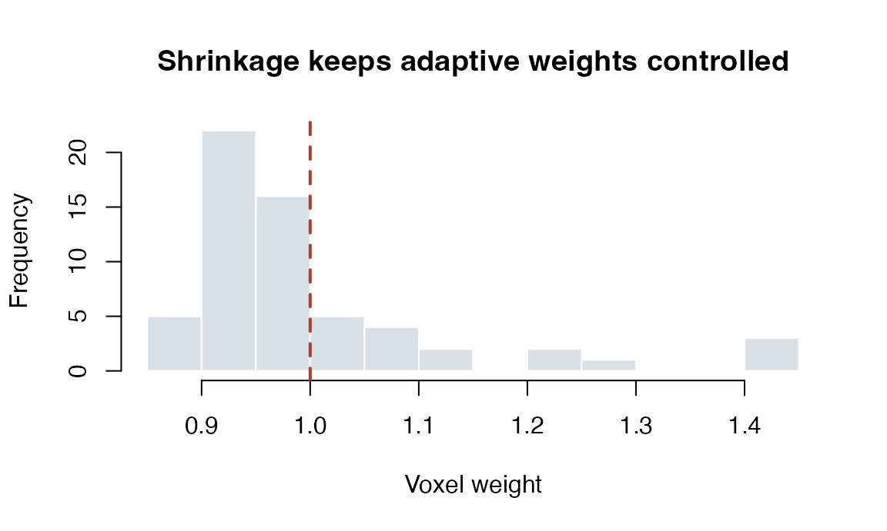
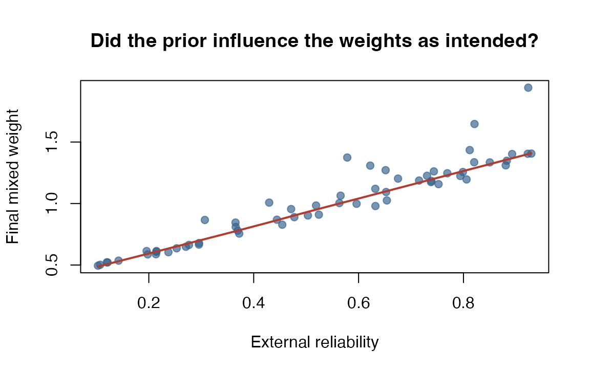

Adaptive Voxel Weighting in DKGE
Source:vignettes/dkge-adaptive-weighting.Rmd
dkge-adaptive-weighting.RmdDKGE fits are driven by cross-subject second moments. Equal voxel weights can let large noisy regions dominate those moments, but adaptive weights can also create leakage if they use held-out data or change under a permutation. This vignette shows how to define, inspect, and structurally check a weighting rule. Those checks are necessary safeguards; they are not a substitute for design-specific null calibration.
See also: vignette("dkge-weighting")
covers the three complementary weighting layers — spatial
(Omega_list), subject-level
(w_method/w_tau), and transport
(sizes). This vignette focuses on the separate
dkge_weights() API for training-fold voxel-level
adaptive weighting. The mechanisms enter different stages of the
computation and can be combined when their joint estimand is
explicit.
The examples use small synthetic datasets so they run fast.
The examples use small synthetic datasets so they run fast.
1. Understanding the ingredients
The weight specification is created with dkge_weights(),
which packages four essential pieces of information that work together
to define the weighting strategy:
- Prior weights describe locations you already trust from external information, such as a reliability map from an earlier study. They must be sign invariant: flipping the sign of a beta map must not change a voxel’s variances all meet this important requirement and can be used safely as priors.
- Adaptive statistics are computed dynamically from the training subjects inside each cross-validation split. The built-in options examine energy (squared amplitude in the design metric), precision (inverse variance), or their product. Energy is , the signal a voxel carries in effect space; precision is , its measurement reliability
-
Combination rules set how prior and adaptive
components blend (product, sum, or override).
mixcontrols the balance between them. - Shrinkage keeps the final weights well-behaved: winsorize extremes, then everything back towards 1 to ensure that no single voxel dominates the fit.
With scope = "fold", adaptive statistics are computed
from the training subjects in each fold. This prevents the held-out
subject from entering the weight estimate. It addresses that specific
leakage path, but does not by itself guarantee calibrated p-values or
external generalisation.
2. Building weight specifications and fitting DKGE
The default configuration relies purely on adaptive statistics, with no prior knowledge.
library(dkge)
wts_adapt <- dkge_weights(
prior = NULL, # no prior information
adapt = "kenergy_prec", # energy × precision, a simple SNR proxy
combine = "product",
mix = 0.6, # adaptive term has more influence than the prior
shrink = list(alpha = 0.5, winsor = 0.99, normalize = "mean"),
scope = "fold" # recomputed on the training subjects of each fold
)
print(wts_adapt)
#> dkge weight specification
#> prior : uniform
#> adapt : kenergy_prec (scope = fold )
#> combine : product (mix = 0.60 )
#> shrink : alpha =0.50, winsor =0.990, normalize =meanThe dataset below has ten subjects, four effects, and sixty voxels per subject. The scale is arbitrary: it is small enough to run fast and large enough to show the weighting strategies apart.
make_subject <- function(id, q = 4L, v = 60L) {
design <- diag(q)
colnames(design) <- paste0("eff", seq_len(q))
beta <- matrix(rnorm(q * v), nrow = q)
dkge_subject(beta, design = design, id = paste0("sub", id))
}
subjects <- lapply(seq_len(10L), make_subject)
K <- diag(4)
fit_uniform <- dkge(subjects, K = K, rank = 2, w_method = "none")
fit_adaptive <- dkge(subjects, K = K, rank = 2, weights = wts_adapt)The second fit computes voxel weights for every training fold under the adaptive rule. Inspect the global weights and the per-subject averages to see how the fit adjusted each voxel’s influence.
head(fit_adaptive$voxel_weights)
#> cluster_1 cluster_2 cluster_3 cluster_4 cluster_5 cluster_6
#> 0.904 0.983 0.930 1.236 0.882 0.931
dkge_diagnostics(fit_adaptive)$voxel_weights
#> $mean
#> [1] 1
#>
#> $sd
#> [1] 0.132
#>
#> $min
#> [1] 0.862
#>
#> $max
#> [1] 1.44
Expect modest deviations from 1.0 rather than spikes. That is what the shrinkage parameters enforce: no single voxel dominates.
3. Mixing priors with adaptive statistics
Suppose you have an external reliability image from a previous study. Convert it into a sign-invariant prior, then blend it with the adaptive component. component is unchanged; it is now blended with that external knowledge.
reliability_prior <- runif(60, min = 0.1, max = 1)
reliability_weight <- reliability_prior^2 + 1e-6
wts_mixed <- dkge_weights(
prior = reliability_weight,
adapt = "kenergy_prec",
combine = "product",
mix = 0.4, # stronger prior, weaker adaptive term
shrink = list(alpha = 0.6, winsor = 0.995)
)
fit_mixed <- dkge(subjects, K = K, rank = 2, weights = wts_mixed)The squared transform is monotone on this non-negative reliability scale, so a larger reliability value implies a larger prior weight. The adaptive term and shrinkage can still modify the final ordering. Inspect that relationship rather than assuming the prior had its intended effect:
prior_check <- data.frame(
reliability = reliability_prior,
final_weight = fit_mixed$voxel_weights
)
stats::cor(prior_check$reliability, prior_check$final_weight,
method = "spearman")
#> [1] 0.956
The upward trend confirms that the prior still affects the final ordering, while the scatter shows that the adaptive statistic and shrinkage also matter. That is more informative than printing the correlation alone.
4. Safety checks and post-hoc updates
Sign-invariance check
For sign-flip inference, a fixed weighting rule should not change when every beta is multiplied by -1. The following executable check verifies that structural property for this example.
subjects_flipped <- lapply(subjects, function(subject) {
subject$beta <- -subject$beta
subject
})
fit_flipped <- dkge(subjects_flipped, K = K, rank = 2, weights = wts_mixed)
max(abs(fit_flipped$voxel_weights - fit_mixed$voxel_weights))
#> [1] 0This equality is a necessary check for the implemented sign-flip route, not a claim of exact finite-sample calibration. A new weighting rule still needs a simulation study matched to its folds, permutation scheme, sample size, and null data-generating process, with Monte Carlo uncertainty reported.
The public API currently accepts only the built-in adaptive rules
shown above; it does not accept a custom weighting function. Sign-flip
inference operates on already computed contrast values and holds the
fitted voxel weights fixed. There is no perm_recompute
argument or permutation-time weight-recomputation path. Consequently, an
odd, sign-sensitive custom rule is not supported for this inference
route. dkge_weights() rejects custom rules and unknown
arguments, so the public API fails closed. Supporting such a rule would
require a new, end-to-end resampling path that refits and validates the
weights for every flip.
For the supported rules, keep scope = "fold" so the
held-out subject does not contaminate the training statistics used to
construct adaptive weights.
Updating an existing fit
You can fit once and revisit the weighting later without rerunning
preprocessing. dkge_update_weights() rebuilds the fold
bases in place with your new weighting scheme.
fit_refit <- dkge_update_weights(fit_uniform, wts_mixed)The update touches only the weighting machinery; subject-level projections and stored results are reused. projections remain fully compatible with the updated model.
Summary
Adaptive weighting in DKGE has four building blocks: a prior, an adaptive statistic, a combination rule, and shrinkage parameters. Training-fold scope and sign-invariance close two important leakage paths. They do not prove that a particular analysis has calibrated error rates.
The examples above showed how to inspect the resulting weights, mix prior knowledge with adaptive rules, and retrofit a new weighting choice onto an existing fit. Use these weighting controls when external reliability information or a prespecified adaptive rule justifies unequal voxel influence. Compare the weighted fit with an equal-weight baseline, report the rule and shrinkage settings, and calibrate the full inferential procedure under a defensible null before making sensitivity or error-control claims.
Where to go next
-
vignette("dkge-weighting")— the three weighting layers this page sits inside: spatial, subject-level, and transport. -
vignette("dkge-contrasts-inference")— the inference machinery that a weighting choice has to survive. -
vignette("dkge-concepts")— what changing a weight does to the estimand.